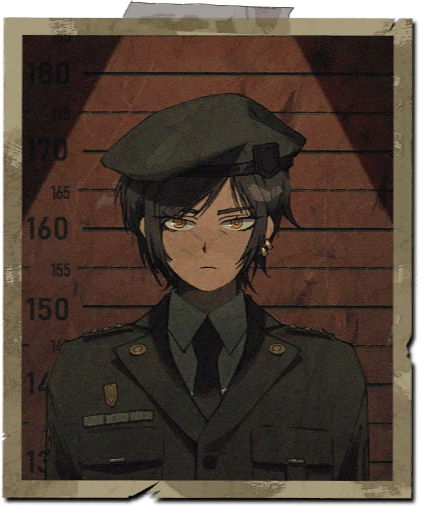

Грешники
1
И Сан
"Крылья" И сан
Слышали о гении, который стал чучелом?
2
Фауст
"Фауст" Иоганн Гёте
Человек склонен к заблуждениям.
3
Дон Кихот
"Дон Кихот" Мигель Сервантес
Достичь недостижимой звезды!
4
Рёсю
"Ширма дьявола"
Да, всем этим художникам-верхоглядам не понять красоты уродства!
5
Мерсо
"Посторонний" Альбер Камю
Сегодня я убил мать. Или, быть может, это было вчера.
6
Хун Лу
"Сон в красном тереме" Цао Сюэцинь
Как нефрит может быть с изъяном, так и наша жизнь имеет свои превратности.
7
Хитклифф
"Грозовой перевал" Эмили Бронте
Не я разбил твоё сердце - его разбила ты; и, разбив его, разбила и моё..
8
Измаил
"Моби Дик" Герман Мелвилл
Можете звать меня Измаил.
9
Родион
"Преступление и наказание" Ф.М. Достоевский
Если бы только она могла забыть обо всём и начать с чистого листа.
10
Данте
"Божественная комедия" Данте Алигьери
Оставьте надежду все, кто сюда входит.
11
Эмиль Синклер
"Демиан" Герман Гессе
Однако, мир, полный зла, уже дал корни прямо здесь, посреди нашего дома.
12

Утис
"Одиссея" Гомер
Я... в сущности своей никто.
13
Грегор
"Превращение" Франц Кафка
Проснувшись однажды утром от беспокойного сна, я обнаружил, что превратился в ужасное создание.